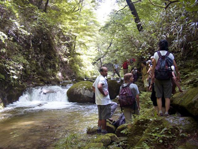
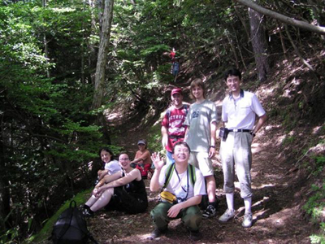
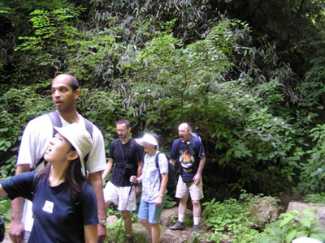
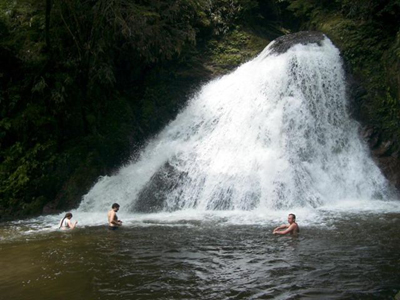
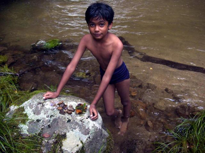
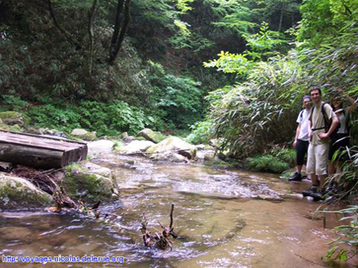
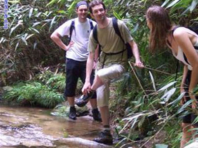
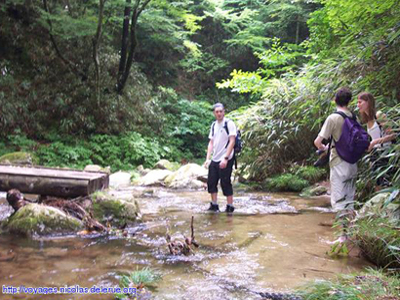
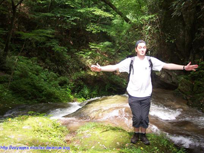
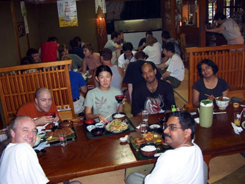

Beginning. |

Group photo. |

A moment when everyone opend their mouth for some reason. |

Time to enjoy water. |
|

The youngest member showing his tresure. |

It seems that they forgot a part of the bridge! |
|

Without shoes it is easier. |

Who cares, my shoes where already wet! |
|

I saw a fish that big. |

Viand. |